第06讲 注意力机制与 Transformer
课堂幻灯片 · 翻页讲授版
基于《动手学深度学习》课程
第06讲 注意力机制与 Transformer › 目录
📋 本讲目录
第06讲 注意力机制与 Transformer › 课前导入
🎬 课前导入：从 RNN 的瓶颈到注意力
上一讲的 RNN 家族用"隐含状态"解决了记忆问题，但仍有两个瓶颈：必须逐词串行 （第 100 个词要等前 99 个算完）、长距离依赖衰减 （信息要一站一站传递）。
而我们读"动物没有过河，因为它太累了"时，理解"它"是直接跳回"动物"的——一眼扫过全句、自动聚焦相关位置 。
🔑 本讲核心
把"聚焦"变成数学：查询（query）、键（key）、值（value）三角色 + 加权汇聚。从注意力一路走到彻底抛弃循环的 Transformer 与开启预训练时代的 BERT 。
1
注意力机制：从心理学到机器学习
注意力是一次"软的、可微分的查表"：查询（query）问每个键（key）"你和我有多相关？"，答案是对值（value）的加权平均。
第06讲 注意力机制与 Transformer › 1. 注意力机制：从心理学到机器学习
1.1 随意线索与不随意线索
心理学研究表明，生物的视觉系统并不是对视野中的一切平均用力，而是有选择地聚焦。注意力来自两类线索：
不随意线索 ：物体本身的突出性吸引你——桌上红色杯子在一堆灰书里格外显眼，你的目光不自觉地被它抓走；随意线索 ：任务目标主动引导你——你想读一本书，于是注意力有意识地落在书上，对周围视而不见。
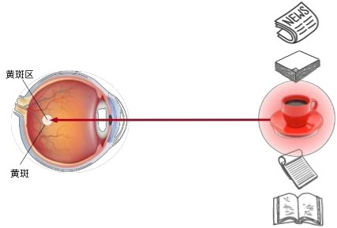
不随意线索：红杯子因颜色突出，不自主地吸引目光。
第06讲 注意力机制与 Transformer › 1. 注意力机制：从心理学到机器学习
1.1 随意线索与不随意线索
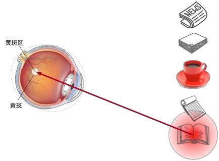
随意线索：带着"想读书"的目的，目光主动落在书上。
第06讲 注意力机制与 Transformer › 1. 注意力机制：从心理学到机器学习
1.2 查询、键与值
把两类线索翻译成机器学习语言：此前学的卷积、全连接、池化层都只用了"不随意线索"——输入什么就处理什么，一视同仁。注意力机制首次把随意线索 引入网络：
查询（query） ：随意线索——"我现在想找什么"；键（key） ：每个输入自带的"标签"——不随意线索，用来和查询比对；值（value） ：每个输入真正的内容。
注意力计算 = 用 query 逐个与 key 比对相似度 → 得到一组权重 → 对 value 做加权平均 。相似度高的输入获得更多关注，这就是注意力池化 （attention pooling）。
第06讲 注意力机制与 Transformer › 1. 注意力机制：从心理学到机器学习
1.2 查询、键与值
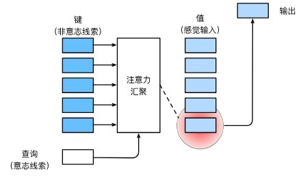
注意力池化框架：查询（随意线索）与每个键比对产生权重，对所有值加权汇聚成输出。键值对构成"记忆库"，查询决定从库里取什么。
🔑 生活化类比
图书馆找书——query 是"我想找深度学习教材"，key 是每本书的书脊标签，value 是书的内容。你和书脊标签一一比对，越匹配的书越被重视，最后抱走的是按匹配度加权的一批书。
2
注意力池化：从非参数到参数化
最早的注意力池化不需要任何学习参数；给它装上可学习的旋钮，就走到了现代注意力分数函数。
第06讲 注意力机制与 Transformer › 2. 注意力池化：从非参数到参数化
2.1 非参数方案：Nadaraya-Watson 核回归
给定数据 \((x_i, y_i)\)，要对查询 \(x\) 做预测：平均池化直接取 \(\frac{1}{n}\sum y_i\) 太粗糙。60 年代提出的 Nadaraya-Watson 核回归按"距离越近权重越大"加权：
其中 \(-\frac{1}{2}(x-x_i)^2\) 来自高斯核 \(K(u)=\frac{1}{\sqrt{2\pi}}\exp(-\frac{u^2}{2})\)。把式子拆开看：\(x\) 是 query，\(x_i\) 是 key，\(y_i\) 是 value——核回归就是最早的注意力池化 ：离查询越近的样本，其值被采纳得越多。
第06讲 注意力机制与 Transformer › 2. 注意力池化：从非参数到参数化
2.1 非参数方案：Nadaraya-Watson 核回归
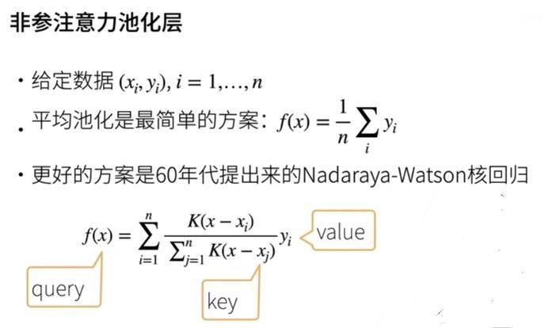
Nadaraya-Watson 核回归：高斯核给出"按距离衰减"的权重，softmax 保证权重和为 1。它没有可学习参数，属于非参数方法。
第06讲 注意力机制与 Transformer › 2. 注意力池化：从非参数到参数化
2.2 参数化注意力：引入可学习的 w
非参数方案的权重完全由距离决定，不够灵活。在注意力分数里引入可学习参数 \(w\)，让模型自己学会"什么样的相似才重要"：
多了参数 \(w\)，模型就能通过训练调整不同特征维度的重要程度——这是从"核回归"走向"可学习注意力"的第一步。
第06讲 注意力机制与 Transformer › 2. 注意力池化：从非参数到参数化
2.3 注意力分数的两种主流设计
query 与 key 的"相似度"称为注意力分数 （attention score），分数经 softmax 归一化就是注意力权重。两种最常用的分数函数：
分数函数 公式 特点
加法注意力 （Bahdanau）\(a(\mathbf{q}, \mathbf{k}) = \mathbf{w}_v^\top \tanh(W_q \mathbf{q} + W_k \mathbf{k})\) query 和 key 维度可以不同；有一个小 MLP，表达力强 缩放点积注意力 \(a(\mathbf{q}, \mathbf{k}) = \mathbf{q}^\top \mathbf{k} / \sqrt{d_k}\) 只需一次矩阵乘法，快；要求 q、k 同维；除以 \(\sqrt{d_k}\) 防止 softmax 饱和
第06讲 注意力机制与 Transformer › 2. 注意力池化：从非参数到参数化
2.3 注意力分数的两种主流设计
缩放点积注意力逐条拆解 （Transformer 原版采用的方案）：
只需一次矩阵乘法，快 ：点积即一次矩阵乘法，GPU 高度优化，计算效率很高；加法注意力需两次线性映射、相加、tanh、再做线性投影，步骤更多。要求 q、k 同维 ：点积 \(\mathbf{q}^\top \mathbf{k}\) 要求两向量维数相同，否则无法相乘；加法注意力先各自乘 \(W_q\)、\(W_k\) 投影到同维再相加，允许不同维。除以 \(\sqrt{d_k}\) 防 softmax 饱和 ：点积方差正比于 \(d_k\)，维度越高分数量级越大，softmax 被推向 0/1 饱和区、梯度近乎消失；除以 \(\sqrt{d_k}\) 做方差归一化，把方差拉回 1 附近，稳住梯度。
🔑 一句话总结
缩放点积注意力用点积衡量 q 与 k 的相似度，辅以缩放因子稳住 softmax 梯度——胜在速度，代价是要求 q、k 维度一致。
第06讲 注意力机制与 Transformer › 2. 注意力池化：从非参数到参数化
2.3 注意力分数的两种主流设计
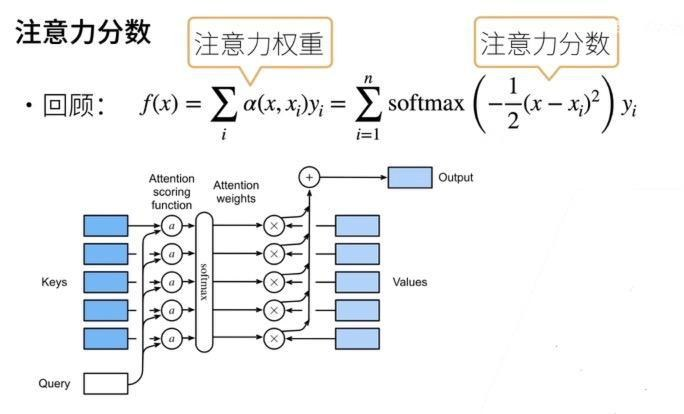
注意力分数 → softmax → 注意力权重 → 对值加权求和。Transformer 采用的就是右侧的缩放点积方案。
⚠️ 常见误区
不要以为除以 \(\sqrt{d_k}\) 是拍脑袋的经验技巧——它有明确的方差分析依据（各分量独立、零均值、单位方差时，点积方差正比于 \(d_k\)）。这个小细节是 Transformer 能训练起来的关键之一。
第06讲 注意力机制与 Transformer › 2. 注意力池化：从非参数到参数化
2.3 注意力分数的两种主流设计
互动实验
缩放点积注意力实验室
三个 value：猫 = (1, 0)，狗 = (0, 1)，汽车 = (1, 1)。输出 = 权重的加权组合。
拖动相似度与维度滑块，或关掉"除以 √dₖ"开关，观察权重如何走向"一家独大"。
第06讲 注意力机制与 Transformer › 2. 注意力池化：从非参数到参数化
2.3 实验解读：缩放点积注意力实验室
实验在做什么 ：滑块设定原始分数 q·kᵢ，softmax 归一化成权重，输出 = 三个 value（猫 (1,0)、狗 (0,1)、汽车 (1,1)）的加权组合。结果怎么读 ：分数 2.6 / 1.0 / 0.0、dₖ = 32、不缩放 → e2.6 ≈13.46、e1 ≈2.72、e0 =1 → 权重 0.784 / 0.158 / 0.058，输出 (0.842, 0.216)——"主要是猫，带一点狗和汽车"。打开缩放对比 ：分数先除以 √32 ≈ 5.66 → 0.46 / 0.18 / 0 → 权重平缓为约 0.42 / 0.32 / 0.26，不再赢家通吃。两个性质 ：权重和恒为 1，输出是 value 的凸组合，不会凭空创造内容；softmax 是"软"argmax——分数差距越大越接近"只取最高分"。
3
Seq2Seq 中的注意力
生成每个目标词时，真正相关的往往只是源句中的某几个词——注意力让解码器每一步都能"回头看"并自动对焦。
第06讲 注意力机制与 Transformer › 3. Seq2Seq 中的注意力
3.1 动机：翻译时该"看"哪里？
编码器—解码器（seq2seq）模型做机器翻译时，编码器把整句源语压缩成一个固定向量，解码器只凭这一个向量逐词生成译文。问题在于：一个向量装不下长句的全部细节，也无法表达"当前该对齐源句哪个位置"。注意力机制正好补上这一课。翻"hello world → bonjour le monde"时，生成 "bonjour" 主要该看 "hello"。
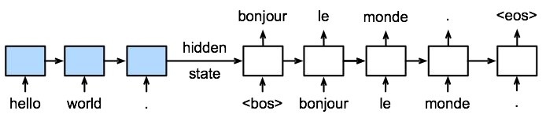
seq2seq 翻译：编码器逐词读入，解码器逐词生成。没有注意力时，解码器每一步只能依赖同一个固定向量，长句信息被严重压缩。
第06讲 注意力机制与 Transformer › 3. Seq2Seq 中的注意力
3.1 动机：没有注意力，问题出在哪？
对照上一页的 seq2seq 翻译图（hello world → bonjour le monde），把问题讲清楚：
左侧（编码） ：编码器逐词读入 hello → world → .，整句信息被压缩进同一个 hidden state （固定向量）；中间 ：hidden state 这根箭头是编码器与解码器之间唯一的通道 ——解码器能拿到的源句信息全部在此；右侧（解码） ：生成 bonjour、le、monde 时，解码器看到的始终是同一个向量 ，从头到尾没有变化；两个硬伤 ：① 信息瓶颈 ——句子越长，一个向量装不下的细节越多，句首 "hello" 的信息经逐步更新后衰减；② 无法对齐 ——生成 "monde" 时本该专门回头看 "world"，但图中没有任何结构支持这一点。
这就是 3.2 节要解决的问题：让解码器每生成一个词，都能直接"回头看"源句的每个词并自动对焦。
第06讲 注意力机制与 Transformer › 3. Seq2Seq 中的注意力
3.2 加入注意力的 seq2seq
Bahdanau 等人 2014 年的经典方案：
编码器 RNN 每个时间步的输出都保留下来 ，作为 key 和 value（一座"记忆库"）；
解码器 RNN 上一时刻的隐含状态作为 query；
每个解码时刻做一次注意力池化，从记忆库中取出"此刻最相关"的源句信息，与当前词的嵌入拼接后再送入解码器 RNN。
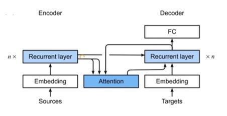
加入注意力的 seq2seq：编码器各时刻输出存入"记忆库"，注意力层用解码器的 query 去检索，检索结果与词嵌入一起送入解码器。
第06讲 注意力机制与 Transformer › 3. Seq2Seq 中的注意力
3.2 图解：注意力"外挂"在哪里
对照上一页的架构图，逐块看信息怎么流动：
左侧编码器 ：Sources → Embedding → Recurrent layer（n× = n 层堆叠），逐词读入源句；中间蓝色 Attention 块是新增"外挂" ，两个输入：编码器各时间步的输出（key/value，记忆库）＋ 解码器上一时刻隐含状态（query，图中从解码器弯回来的箭头）；Attention 输出 （检索到的上下文向量）与当前目标词嵌入拼接 ，一起送入解码器循环层；右侧解码器 ：Targets → Embedding → Recurrent layer（×n）→ FC 全连接层，输出词表上的概率分布；与 3.1 对比 ：没有注意力时只有 hidden state 一根线；现在每个解码步都能拿自己的 query 重查记忆库——"回头看"的通路打通了。
第06讲 注意力机制与 Transformer › 3. Seq2Seq 中的注意力
3.2 加入注意力的 seq2seq
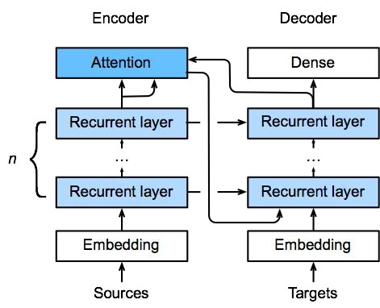
实现细节：注意力使用编码器最后一个循环层的输出；注意力输出与嵌入拼接后送入解码器的第一个循环层。每个解码步骤都有自己的注意力权重分布——这就是"对齐"。
图中四类箭头的含义：
编码器顶层 → Attention （向上）：所有时间步的输出作 key/value——"记忆库"（取最高层，上下文最完整）；解码器顶层 → Attention （右上弯回）：解码器上一时刻的隐含状态作 query——"准备生成下一个词，该看源句哪里？"；Attention → 解码器第一个循环层 （弯到右下）：检索出的上下文向量与目标词嵌入拼接后送入，顶端 Dense 输出词表概率；编码器各层 → 解码器各层 （横向）：循环层开工前需要初始状态（默认全零），这里把编码器第 ℓ 层读完整句的状态设为解码器第 ℓ 层的初始状态，逐层对应 。区分两个概念：最终隐含状态 = 每层最后一步的状态（n 层共 n 个向量）；记忆库 = 最顶层所有时间步的输出序列。一次性"全局概览"，与注意力"每步按需检索"互补。
每个解码步骤都重走一遍"query 查询 → 加权检索 → 拼接输入"，各有各的权重分布——这就是"对齐" 。
第06讲 注意力机制与 Transformer › 3. Seq2Seq 中的注意力
3.2 加入注意力的 seq2seq
互动实验
对齐可视化：每个译文词在"看"谁
源句 "I love deep learning" → 译文 "我 爱 深度 学习"。
点击下方任一译文词，观察它对源句各词的注意力权重分布。
译文词（点击选择 query）
源句词上的注意力权重
注意力权重画成热力图，就能直观展示两种语言词与词的对齐关系——这是神经网络难得的可解释性 。
第06讲 注意力机制与 Transformer › 3. Seq2Seq 中的注意力
3.2 加入注意力的 seq2seq
✅ 划时代的意义
注意力让解码器每一步都能"回头看"整个源句并自动对焦，长句翻译质量大幅提升——固定向量的瓶颈被打破，"对齐"也第一次变得可见。
4
自注意力（Self-Attention）
把同一个序列的每个位置同时复制成 query、key、value 三份，让每个位置都去关注整个序列。
第06讲 注意力机制与 Transformer › 4. 自注意力（Self-Attention）
4.1 自己关注自己
注意力不一定是"一个序列查询另一个序列"。自注意力中，给定序列 \(\mathbf{x}_1, \ldots, \mathbf{x}_n\)，输出等长的 \(\mathbf{y}_1, \ldots, \mathbf{y}_n\)：
$$\mathbf{y}_i = f\big(\mathbf{x}_i,\ (\mathbf{x}_1, \mathbf{x}_1), \ldots, (\mathbf{x}_n, \mathbf{x}_n)\big) \in \mathbb{R}^{d}$$
为什么每个位置要复制成三份？ 同一向量 \(\mathbf{x}_i\) 在不同时刻扮演三种角色：算自己的输出时当 query （发问"全句谁和我最相关？"）；别人算输出时当 key （挂出"标签"供比对）；内容本身当 value （被加权汇入别人的新表示）。每个位置既是查询者又是被查询者——这就是"自"的含义。每个 \(\mathbf{y}_i\) 都融合了全序列与 \(\mathbf{x}_i\) 最相关的信息。
第06讲 注意力机制与 Transformer › 4. 自注意力（Self-Attention）
4.1 自己关注自己
自注意力：keys、values、queries 全部来自同一序列，每个位置的输出都是对全序列加权汇聚的结果。所有位置两两计算，可以完全并行——不必像 RNN 那样逐词等待。
第06讲 注意力机制与 Transformer › 4. 自注意力（Self-Attention）
4.1 图解与例子：一个位置如何更新
对照上一页结构图 ：下方每个方框是序列中一个位置的输入向量；分叉出的 3 根箭头 = 复制成 keys、values、queries 三份；蓝色块内完成所有位置两两比对（共 n×n 次）与加权求和；上方输出框是各位置融合全句信息后的新表示 \(\mathbf{y}_i\)。
用"它"走一遍 ：query = "它"的词向量 → 与全句 9 个 key 逐一比对 → "动物"得分最高 → softmax 后"动物"的 value 占最大权重 → "它"的新表示融入"动物"的语义——指代关系被自动建立 。所有位置同时完成同样的更新，完全并行。
🔑 与 3.2 节的区别 + 预告
3.2 节是两个序列之间 的交叉注意力（query 来自解码器，key/value 来自编码器）；自注意力是同一序列内部 ，q、k、v 同源。第 5 章起，三份副本先乘可学习矩阵 \(W_q, W_k, W_v\) 再使用。
第06讲 注意力机制与 Transformer › 4. 自注意力（Self-Attention）
4.1 自己关注自己
互动实验
自注意力流向：每个词在关注谁
句子：「动物 没有 过河 ， 因为 它 太 累 了」——注意"它"的权重分布。
点击句中任意词作为 query，观察它对全句各词的注意力权重。
点击 "它" ：权重最大的词是 "动物" ——模型自己学会了指代消解，没有人告诉它语法规则。
第06讲 注意力机制与 Transformer › 4. 自注意力（Self-Attention）
4.2 与 CNN、RNN 对比
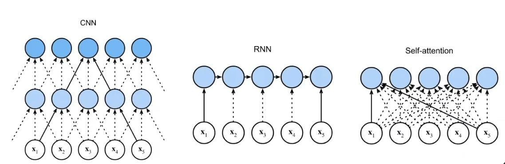
三种结构对比：CNN 靠堆叠卷积层逐层扩大感受野；RNN 必须逐步传递信息；自注意力任意两个位置一步直达。
第06讲 注意力机制与 Transformer › 4. 自注意力（Self-Attention）
4.2 与 CNN、RNN 对比
CNN RNN 自注意力
计算复杂度（每层） \(O(k \cdot n \cdot d^2)\) \(O(n \cdot d^2)\) \(O(n^2 \cdot d)\) 并行度 \(O(n)\) \(O(1)\)（必须串行） \(O(n)\) 最长路径 \(O(n/k)\) \(O(n)\) \(O(1)\)
"最长路径"指序列中任意两个位置交换信息要经过多少步——它决定了长距离依赖的难易。自注意力任意位置一步可达、又可全并行，代价是 \(O(n^2)\) 的计算量（序列特别长时成为瓶颈）。
🔑 初学者理解
RNN 像排队传话，队尾的话要一个一个传过来；自注意力像开会，每个人直接和所有人对话——效率高了，但人太多（序列太长）时会场也会拥挤。
第06讲 注意力机制与 Transformer › 4. 自注意力（Self-Attention）
4.2 对比表逐格解读（n=序列长度，d=向量维度，k=核宽）
计算复杂度 ：CNN \(O(knd^2)\) = 每位置宽 \(k\) 卷积、\(d\) 通道到 \(d\) 通道，乘 \(n\) 个位置；RNN \(O(nd^2)\) = 每步矩阵乘向量 \(d^2\)，乘 \(n\) 步；自注意力 \(O(n^2d)\) = \(n\) 个 query × \(n\) 个 key 的 \(d\) 维点积——平方项来自"两两比对" 。并行度 ：CNN 与自注意力各位置互不依赖，\(O(n)\) 同时算；RNN 第 \(t\) 步必须等第 \(t-1\) 步的隐状态，\(O(1)\) 串行是结构宿命。最长路径 ：CNN 一层只看约 \(k\) 个邻居，跨句信息要堆 \(O(n/k)\) 层；RNN 沿链条最多 \(n-1\) 步；自注意力任意两位置直连，\(O(1)\) 一步直达。谁更贵看 \(n\) 与 \(d\) ：\(d\) 大 \(n\) 短时三者相当；序列上万时 \(n^2\) 项使自注意力最贵——换来的是"一步直达 + 全并行"。
5
Transformer：完全建立在注意力上的架构
2017 年《Attention Is All You Need》干脆彻底抛弃循环与卷积，只用注意力搭建整个模型。逐块拆解这座大厦。
第06讲 注意力机制与 Transformer › 5. Transformer：完全建立在注意力上的架构
5.1 自注意力机制：并行，但丢失顺序
自注意力要用 \(n\) 个输入生成 \(n\) 个输出，做法是把每个输入同时复制为键、值和查询。这带来两个直接影响：
不保留顺序信息 ：每个位置的输出只跟随词本身，与它在序列中的位置无关（置换不变性）；可以并行计算 ：\(n\) 个输出之间没有先后依赖，不像 RNN 必须逐个时间步串行展开。
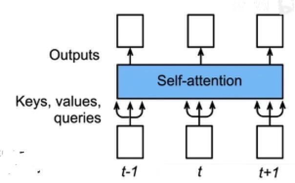
自注意力机制：每个位置的输入被同时复制为 keys、values、queries，一次性并行算出所有输出——但框图里没有出现任何"第几个位置"的信息。
第06讲 注意力机制与 Transformer › 5. Transformer：完全建立在注意力上的架构
5.2 Transformer 模型架构
Transformer 仍然是编码器—解码器架构，但循环层被整个换掉。注意力集中在 3 个地方 ：
编码器自注意力 ：源句内部互相关注，理解上下文；解码器自注意力 ：已生成的目标词互相关注（带掩码，不能偷看未来）；编码器—解码器注意力 ：解码器拿 query 去查询编码器的输出（对齐源句），编码器状态传递到解码器的每一块。
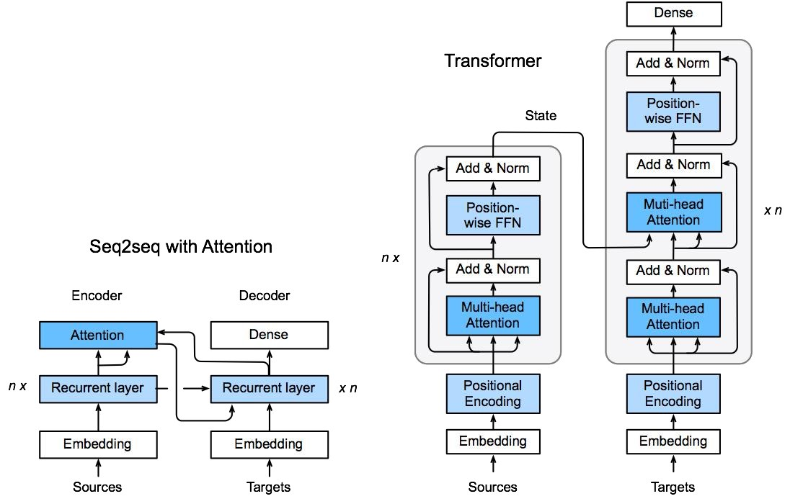
左：seq2seq+注意力（循环层 + 注意力）。右：Transformer 的变换器块——编码器、解码器各堆叠 \(n\) 个相同的块，块内是"多头注意力 → Add & Norm → 位置前馈网络 → Add & Norm"；底部嵌入层之外加入位置编码来补充顺序信息。
第06讲 注意力机制与 Transformer › 5. Transformer：完全建立在注意力上的架构
5.2 架构图怎么读：从左到右
左图 = 第 3 章 seq2seq+注意力 ：主体仍是循环层（n× 堆叠），注意力只是中间的外挂检索层；右图 = Transformer ：循环层整个消失，编码器（×n）与解码器（×n）全由两类蓝色子层堆成——多头注意力 + 位置前馈网络，每个子层外包 Add & Norm；三处注意力的位置 ：编码器块底部 = 编码器自注意力；解码器块底部 = 解码器自注意力（带掩码）；解码器块中部 = 编码器—解码器注意力——key/value 由 "State" 横线从编码器顶端引来，送入解码器每一块 。箭头读法 ：注意力框下方三根箭头 = Q、K、V——中间直箭头是 query（来自下方解码器），左右弯箭头是 K、V（同一条 State 线到框前分成两个箭头，因 K、V 同源）；底部 Positional Encoding ：两侧嵌入之后叠加位置编码，注入顺序（补 5.1 的欠账，5.6 细讲）；数据流 ：源句从编码器底部逐块向上；解码器逐块向上、顶端 Dense 输出词表概率。
第06讲 注意力机制与 Transformer › 5. Transformer：完全建立在注意力上的架构
5.3 多头注意力机制
一次注意力只能在一个表示空间里找相似。多头注意力把 query、key、value 用 \(h\) 组不同的线性投影变换到 \(h\) 个子空间，各自独立做注意力，再把结果拼接后做一次投影：
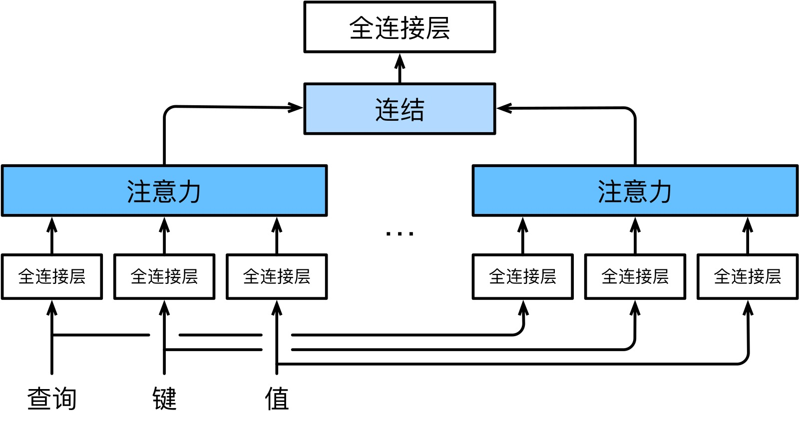
多头注意力结构：Queries / Keys / Values 分别经过 \(h\) 组独立的 Dense 投影，各自做 Attention，输出经 Concat 拼接后再过一次 Dense。
第06讲 注意力机制与 Transformer › 5. Transformer：完全建立在注意力上的架构
5.3 多头注意力机制
互动实验
不同的头，看不同的地方
同一句话「动物 没有 过河 ， 因为 它 太 累 了」，query 固定为"它"。
切换三个注意力头，观察同一个 query 在不同子空间里关注模式的差异。
一个头可能关注语法搭配 ，另一个头关注指代关系 ，还有头关注位置远近 ——多头让模型同时从多个角度审视序列，类似 CNN 用多个卷积核提取多种模式。
第06讲 注意力机制与 Transformer › 5. Transformer：完全建立在注意力上的架构
5.4 位置前馈网络（Position-wise FFN）
每个变换器块里还有一个位置前馈网络 ，它对每个位置独立地过同一个两层 MLP。按讲义里的等价视角来看它的计算：
将输入（批量大小，序列长度，特征集大小）重新整形 为（批量 × 序列长度，特征集大小）；
用两层 MLP 变换；
再转换回 3-D 形态 ；
这等价于应用两个 \(1 \times 1\) 卷积层 。
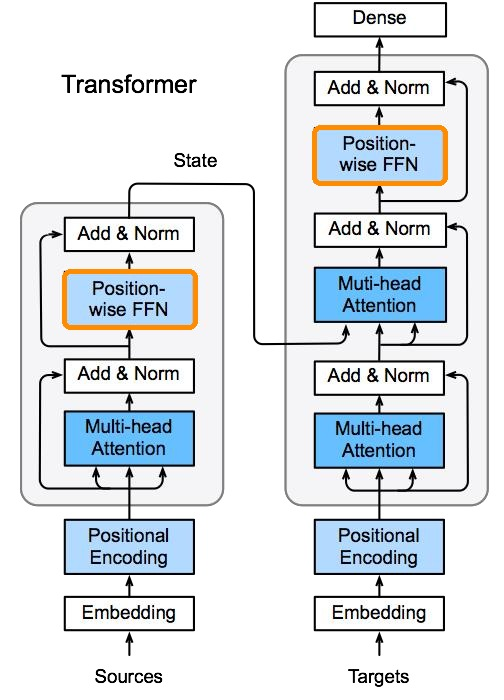
橙色高亮即 Position-wise FFN：注意力负责"混合"位置间的信息，FFN 负责在每个位置上独立做非线性变换——两者分工明确。
第06讲 注意力机制与 Transformer › 5. Transformer：完全建立在注意力上的架构
5.4 逐位置 MLP：拆开来看
名字 ：position-wise = 逐位置——同一个两层 MLP 对每个位置独立作用，位置间不交换信息；为什么重新整形 ：（批量, 序列长, d）合并前两维 → 每行是一个位置的 d 维向量，MLP 逐行独立作用，完事再折回三维；结构 ：FFN(x) = ReLU(xW₁+b₁)W₂+b₂——d 维 → 扩到 \(d_{ff}\)（常取 4d，如 768→3072）→ 压回 d 维；ReLU 提供非线性，维度不变块才能堆叠；为什么等价于两个 1×1 卷积 ：1×1 卷积只看当前位置、只混合通道维 = 每位置独立线性变换；两个串联（夹 ReLU）即逐位置两层 MLP；为什么需要它 ：注意力对 value 只是加权平均（线性），表达力有限；FFN 补非线性。分工：注意力管跨位置交流，FFN 管位置内加工。
第06讲 注意力机制与 Transformer › 5. Transformer：完全建立在注意力上的架构
5.5 添加与归一化（Add & Norm）
它包裹在每一个子层 （多头注意力、位置前馈 FFN）外面，是能堆几十层 Transformer 的关键。两个组件分工明确：Add = 残差连接 ，Norm = 层归一化（Layer Normalization） 。
$$y = \mathrm{LayerNorm}\big(x + F(x)\big)$$
\(F(x)\) 就是子层（注意力模块 / FFN 模块）；次序是先残差相加、再做 LayerNorm （Post-LN 结构，原始论文版本）。
第06讲 注意力机制与 Transformer › 5. Transformer：完全建立在注意力上的架构
5.5 一、Add：残差连接（呼应第04讲 ResNet）
公式 ：\(y = x + F(x)\)——\(x\) 是子层原始输入，\(F(x)\) 是子层学到的变换，只负责学修正量 ；输入 \(x\) 经恒等旁路原样传回，与子层输出相加（结构图中绕过蓝色子层、汇入 ⊕ 的弯箭头）；作用 ① 防梯度消失与退化 ：网络很深时，子层直接学恒等映射很难；残差让子层只学"差量"——最坏情况 \(F(x) \to 0\)，模型等价于 \(y = x\)，至少不会变坏 ；作用 ② 梯度直连通路 ：\(\partial y/\partial x = I + \partial F/\partial x\)——单位矩阵 \(I\) 是一条不衰减的直连通路，梯度沿该通路回传、不会逐层衰减。Transformer 能堆几十层的核心原因之一。
第06讲 注意力机制与 Transformer › 5. Transformer：完全建立在注意力上的架构
5.5 二、Norm：层归一化 vs 批量归一化
LayerNorm（Transformer 用的） ：沿最后一维（特征维） 算均值方差——X.mean(axis=-1)，对单个样本、单个位置的特征向量独立归一；序列长短、批量大小怎么变都稳定；BatchNorm ：沿批次维 统计——X.mean(axis=0)，跨样本计算；句子长度变化、batch 很小时统计不稳定，NLP 很少用；一句话理解 LayerNorm ：把这一个位置的所有特征拉到均值 0、方差 1 的分布，稳住每层数值范围——加速训练、稳定数值。
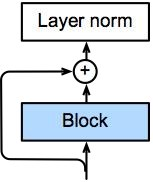
Add & Norm：Block（子层）输出与输入相加（⊕）后再做 Layer norm。对每个样本沿特征维独立归一，序列长度和批量大小变化时都稳定。
第06讲 注意力机制与 Transformer › 5. Transformer：完全建立在注意力上的架构
5.5 三、知识拓展：四种归一化对比（BN / LN / IN / GN）
区别只在"哪些像素一起算 μ、σ"。立方体三轴：\(N\)（批次/样本）、\(C\)（通道）、\(H\cdot W\)（空间像素）；蓝色 = 共用同一套 μ、σ 的像素 。
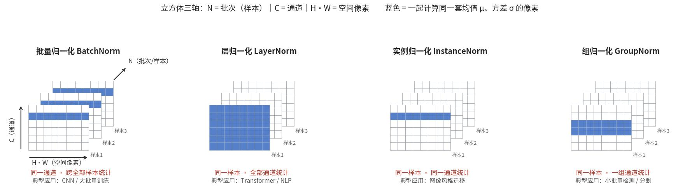
BN 同一通道、跨全部样本统计 → CNN 大批量训练；LN 同一样本、全部通道统计 → Transformer / NLP 标配；IN 同一样本、同一通道内统计 → 图像风格迁移；GN 同一样本、通道分组统计 → 小批量检测 / 分割。
第06讲 注意力机制与 Transformer › 5. Transformer：完全建立在注意力上的架构
5.5 添加与归一化（Add & Norm）
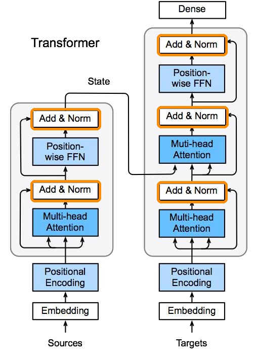
橙色高亮即各处的 Add & Norm：编码器和解码器的每个注意力子层、每个 FFN 子层外面都包着一个。
第06讲 注意力机制与 Transformer › 5. Transformer：完全建立在注意力上的架构
5.6 位置编码：把顺序"注入"模型
5.1 说过自注意力本身不含顺序信息，解决办法是手工构造"位置签名"加到嵌入上。假设嵌入 \(X \in \mathbb{R}^{l \times d}\)，创建同样形状的位置编码矩阵 \(P \in \mathbb{R}^{l \times d}\)：
第 \(i\) 个位置、第 \(2j\) 维是 sin、第 \(2j+1\) 维是 cos，不同维度频率不同：低维变化快（区分邻近位置），高维变化慢（标记长距离）。输出 = \(X + P\)，顺序信息就这样"混进"了表示。
第06讲 注意力机制与 Transformer › 5. Transformer：完全建立在注意力上的架构
5.6 位置编码：把顺序"注入"模型
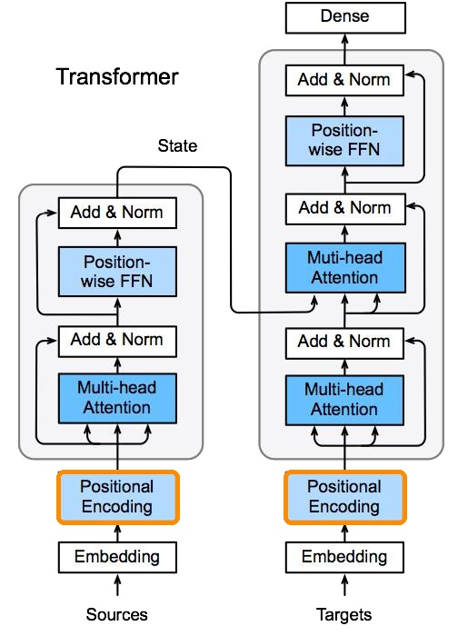
橙色高亮即 Positional Encoding：编码器和解码器都在嵌入（Embedding）之上叠加位置编码，把顺序信息注入模型。
第06讲 注意力机制与 Transformer › 5. Transformer：完全建立在注意力上的架构
5.6 位置编码：把顺序"注入"模型
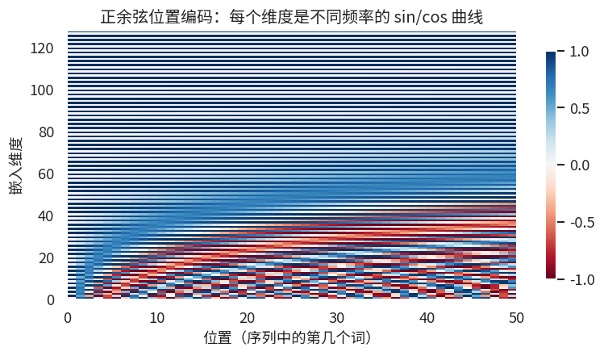
位置编码热力图（50 个位置 × 128 维）：横轴是序列位置，纵轴是嵌入维度。低维（底部）波纹细密、高维（顶部）平缓——每个位置因此拥有独一无二的"指纹"。
第06讲 注意力机制与 Transformer › 5. Transformer：完全建立在注意力上的架构
5.6 位置编码：把顺序"注入"模型
互动实验
位置编码热力图与波形
60 个位置 × 64 维。左图是完整热力图（蓝 = −1，红 = +1）；右图是选定维度对的 sin/cos 波形。
拖动"维度对 j"滑块，观察低维（高频）与高维（低频）波形的差异。
低维波纹细密、高维平缓——每个位置因此拥有独一无二的"指纹" 。
第06讲 注意力机制与 Transformer › 5. Transformer：完全建立在注意力上的架构
5.7 预测：带掩码的自注意力
在时刻 \(t\) 预测时有个陷阱：如果自注意力能看到整个目标序列，第 \(t\) 个位置就能"偷看"答案本身——模型学会抄答案而非预测。解决办法是掩码 （mask）：
用之前输入的键和值 （位置 \(1 \sim t-1\)）；
时刻 \(t\) 的输入作为查询（以及键和值） ，来预测输出；
未来位置的注意力分数被置为 \(-\infty\)，softmax 后权重为 0。
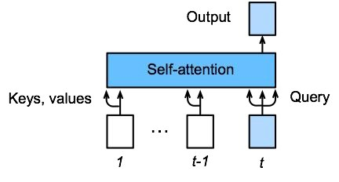
带掩码的自注意力：预测时刻 \(t\) 的输出时，只能使用 \(t\) 及之前的键和值。这就是 GPT 类生成模型的"因果掩码"。
第06讲 注意力机制与 Transformer › 5. Transformer：完全建立在注意力上的架构
5.7 预测：带掩码的自注意力
互动实验
生成每加一个词，要多算多少？
因果掩码下的分数矩阵：斜线格被屏蔽，蓝色格可见，深蓝格是这一步新增的一行。
点击"生成下一个词"，观察每次只新增一行——这就是推理时 KV 缓存（KV cache）省力的根源。
新 token 只贡献一行 新分数：它的 query 对每一个历史 key。形成这一行需要所有历史 k，把它变成输出需要所有历史 v——所以把它们缓存 起来，什么都不必重算。
6
BERT：预训练时代的开幕
拿 Transformer 的编码器，在 30 亿单词上预训练，下游任务只加一个输出层——NLP 从此进入"预训练 + 微调"时代。
第06讲 注意力机制与 Transformer › 6. BERT：预训练时代的开幕
6.1 NLP 中的迁移学习
计算机视觉早已习惯"预训练 + 微调"：用在 ImageNet 上练好的网络提取特征，新任务只训一个小分类头。NLP 中的迁移学习也是同样的三步：
使用预先训练的模型（例如 word2vec 或语言模型）为新任务提取单词/句子特征；
通常不更新预训练模型的权重；
再构建一个新模型来捕获新任务所需的信息。
但早期的预训练表示有两个短板：word2vec 忽略顺序 ，且同一个词在任何语境下向量都一样（"苹果"不分水果和公司）；语言模型只看单一方向 ，看不到后文。NLP 需要一种能真正理解双向上下文的预训练模型。
第06讲 注意力机制与 Transformer › 6. BERT：预训练时代的开幕
6.2 BERT 的动机与架构
2018 年 Google 提出 BERT （Bidirectional Encoder Representations from Transformers）：拿 Transformer 的编码器（没有解码器），在超过 30 亿单词的书籍和维基百科语料上预训练，让模型充分吸收语言知识；下游任务只需在顶部加一个简单的输出层做微调：
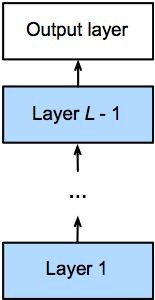
NLP 与 CV 的迁移学习完全对齐：预训练模型充当"特征提取器"（Layer 1 … L−1），新任务只需加一个"分类器"输出层——NLP 侧如情感分类（"我喜欢这个电影 → 0/1"），CV 侧如识别猫。
第06讲 注意力机制与 Transformer › 6. BERT：预训练时代的开幕
6.2 BERT 的动机与架构
版本 Transformer 块数 隐含大小 注意力头数 参数量
BERT-Base 12 768 12 1.1 亿 BERT-Large 24 1024 16 3.4 亿
因为编码器是双向 的（每个位置能看到整句），BERT 的上下文表示远优于单向语言模型，一经发布就横扫 11 项 NLP 基准任务。它的预训练任务也颇有创意——掩码语言模型 （随机遮住 15% 的词让模型猜，类似完形填空）和下一句预测 。
📍 历史坐标
Transformer（2017）→ BERT（2018，编码器路线，理解任务）→ GPT 系列（解码器路线，生成任务）→ ChatGPT/大语言模型时代。我们今天站在的"大模型"潮头，技术地基正是本讲的注意力机制。
第06讲 注意力机制与 Transformer › 7. 本讲小结与自测
7.1 知识要点回顾
主题 必须掌握的内容 注意力的三个角色 query（随意线索）、key（比对标签）、value（内容）；注意力 = 加权汇聚 注意力池化 Nadaraya-Watson 核回归是最早的非参数注意力；参数化引入可学习 \(w\) 分数函数 加法注意力（可不同维）vs 缩放点积（快，除以 \(\sqrt{d_k}\) 防饱和） seq2seq+注意力 编码器每步输出作 key/value，解码器状态作 query；解决固定向量瓶颈与对齐 自注意力 同一序列充当 q/k/v；任意位置一步直达、全并行；复杂度 \(O(n^2 d)\)
第06讲 注意力机制与 Transformer › 7. 本讲小结与自测
7.1 知识要点回顾
主题 必须掌握的内容 Transformer 三处注意力；多头 = 多角度并行关注；FFN 逐位置变换；Add & Norm；位置编码注入顺序；解码器因果掩码 BERT Transformer 编码器 + 掩码语言模型预训练 + 微调；Base 1.1 亿 / Large 3.4 亿参数
第06讲 注意力机制与 Transformer › 7. 本讲小结与自测
7.2 课堂自测
Q1 · 缩放点积注意力为什么要除以 \(\sqrt{d_k}\)？不除会有什么后果？
✅ \(d_k\) 越大点积量级越大，softmax 被推向饱和区（输出接近 0 或 1），梯度趋近 0，训练困难。除以 \(\sqrt{d_k}\) 把分数方差拉回 1 附近，使 softmax 工作在梯度丰富的区间。常见误区：以为是经验技巧——其实有明确的方差分析依据（独立随机向量的点积方差正比于 \(d_k\)）。
Q2 · 自注意力本身不包含顺序信息，Transformer 是怎么解决的？解码器为什么不能看到未来？
✅ 通过位置编码——把不同频率的 sin/cos"位置指纹"加到词嵌入上，顺序信息随之进入表示。解码器加因果掩码：时刻 \(t\) 只允许关注 \(1 \sim t\) 的位置，未来分数置 \(-\infty\)；否则训练时模型会直接抄答案，学不到预测能力。
第06讲 注意力机制与 Transformer › 7. 本讲小结与自测
7.2 课堂自测
Q3 · 与 RNN 相比，自注意力在长距离依赖和并行计算上各有什么优劣？序列非常长时它的瓶颈是什么？
✅ 优势——任意两位置信息一步直达（最长路径 \(O(1)\)，RNN 是 \(O(n)\)），且所有位置可并行计算（RNN 必须串行）。瓶颈——计算复杂度 \(O(n^2 \cdot d)\) 且注意力矩阵占 \(O(n^2)\) 显存，序列上万时难以承受（后续工作的改进方向：稀疏注意力、线性注意力等）。
第06讲 注意力机制与 Transformer › 7. 本讲小结与自测
7.3 课程后续
📖 后续内容
至此，从 MLP、CNN、RNN 到 Transformer 的核心模型体系已经完整。后续将把这些部件用于两大应用方向——计算机视觉（第 07 章）与自然语言处理（第 08 章），并最终汇聚到大语言模型（LLM）的原理与实践中。